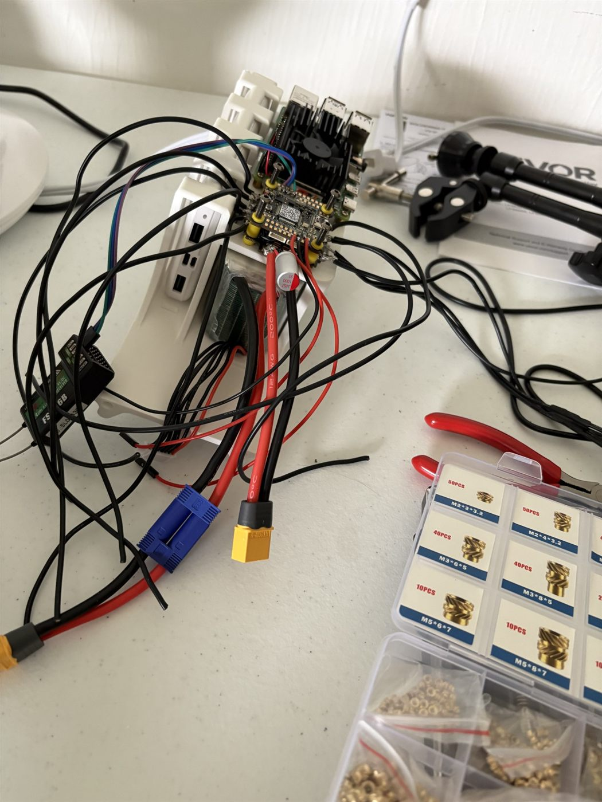
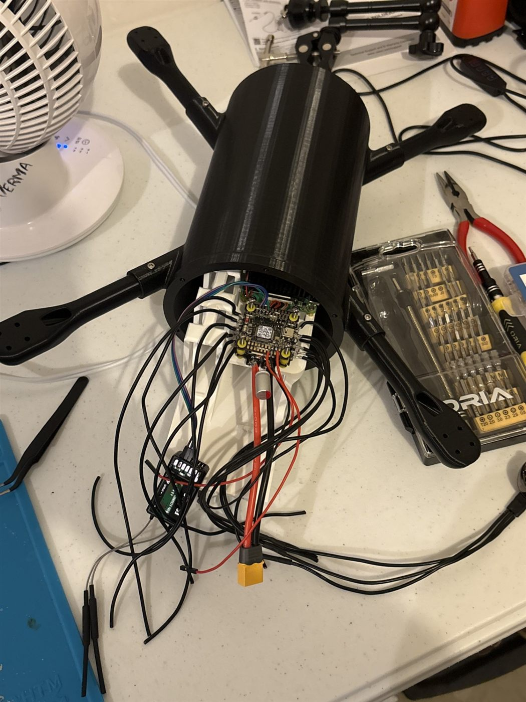
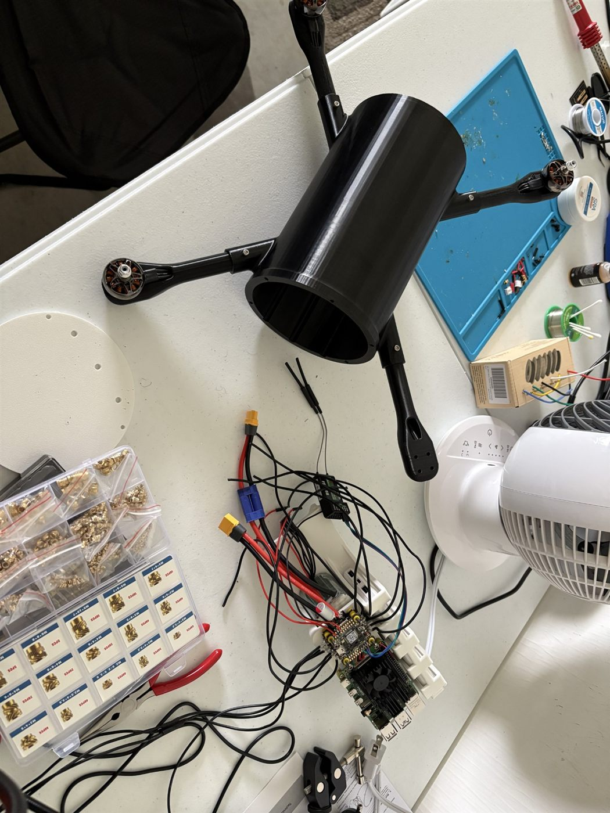
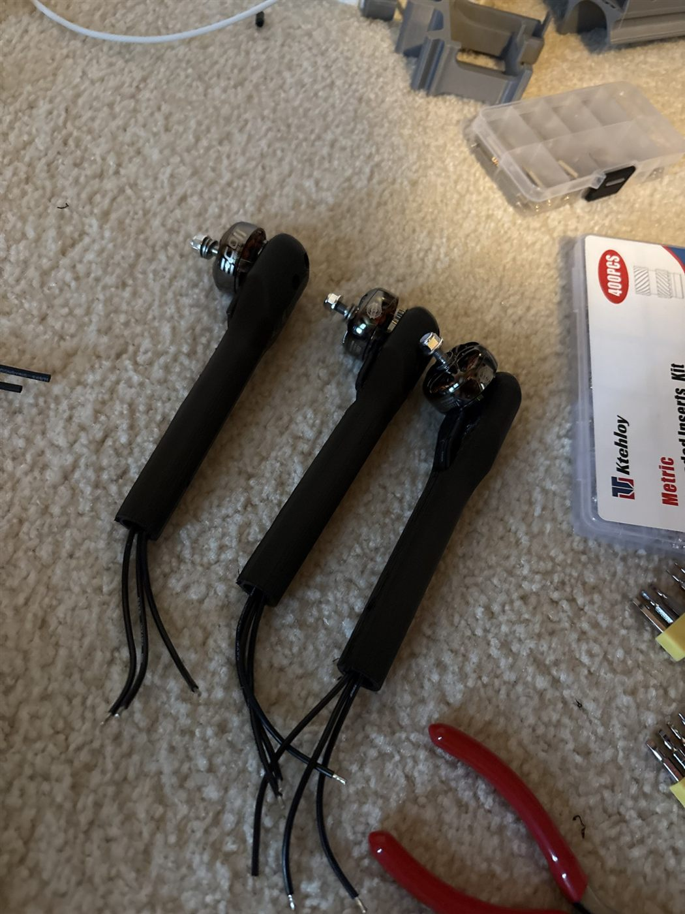

Autonomous Multipurpose UAV
A low-cost, modular quadcopter I'm co-developing with Yash Kakade, built to carry different payloads for different missions, including demining. Designed in Fusion 360 and built through rapid PETG prototyping, with a cylindrical fuselage and a removable avionics bay.
The Goal
A 7-inch-class quadcopter that can take on different missions by swapping its payload, while staying cheap enough to lose and easy to build and work on. Propulsion, a 6S battery, flight electronics, and a companion computer all have to fit in one fuselage without sacrificing structural integrity, cooling, component retention, or center of gravity.
One Mission: How Much Should It Cost to Keep a Person Off a Minefield?
A landmine costs a few dollars to make. The UN estimates that clearing one by hand costs around $1,000, and the person doing it is at risk the whole time. For humanitarian and military demining, this drone is built to be lost: for under $400, it flies to a mine and detonates it in place, so the drone takes the risk instead of a person.
Given the general area of a minefield, it uses computer vision and a reinforcement-learning policy to find a mine and guide itself onto it in closed loop. Every structural part is 3D printed and the electronics are off the shelf, so losing one means printing and assembling the next.
Design
I own the mechanical architecture and structural design. The airframe uses a printed cylindrical fuselage with four bolt-on motor arms. The electronics mount to a separate sled that slides into the fuselage, so the whole avionics stack can come out for servicing instead of being rewired in place. The idea came from the removable avionics bays used in high-power rocketry, like the sled on UC Rocketry's two-stage rocket. A vented end cap lets air through to cool the electronics.
Every joint uses heat-set threaded inserts rather than screws driven straight into plastic, so parts can be taken apart and reassembled repeatedly during iteration without stripping.
The motor wires connect through soldered-on gold bullet connectors instead of being hard-wired. A failed motor can be unplugged and swapped quickly, and the motors can be disconnected so the avionics sled slides completely out of the fuselage.
Software & Autonomy
Yash leads the software: a Raspberry Pi companion computer running ROS 2 alongside an ArduPilot flight controller, with telemetry, health monitoring, a hot-pluggable payload system, and a web dashboard. The computer-vision and reinforcement-learning guidance is in development. The flight controller stays in charge of flight safety.
Design to Reality
The first printed arms wouldn't seat in the fuselage sockets. I had modeled the joint as a zero-clearance friction fit, but FDM-printed PETG comes out slightly oversized on outer surfaces and undersized in holes, so the real fit was far tighter than in CAD. Opening the socket diameter by 0.2 mm fixed it, and I now build clearance into printed joints from the start instead of modeling parts at nominal size.
V1 to V2
Everything pictured on this page is V1. Before V1, the prototype motor arms used a rectangular cross-section; V1 moved to the tubular arms shown here. V2 is being modeled in Fusion 360 now, with a new chassis and fuselage tube:
- Swappable payload mount underneath the fuselage, so a camera, lidar, or sensor package can be changed per mission.
- More air vents in the fuselage for better electronics cooling.
- Smaller chassis built around a smaller Pi battery: 10,000 mAh at 225 g down to 5,000 mAh at 100 g. The Pi doesn't draw enough power to need the larger pack, since the main flight battery runs out first.
Where It's At
V1 has completed its first successful hover test. V2 CAD is in progress.
Build Specs



